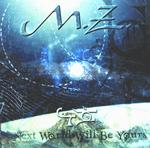

| Artist: | MZ |
| Title: | Next World Will Be Yours |
| Label: | MP Prod 3068692 |
| Length(s): | 56 minutes |
| Year(s) of release: | 2001 |
| Month of review: | [11/2001] |
| 1) | Moonlight Falls | 1.08 |
| 2) | Rings Around The Earth | 5.35 |
| 3) | Just Loneliness | 1.12 |
| 4) | Such A Long Way | 7.14 |
| 5) | Next World Will Be Yours | 5.43 |
| 6) | Dusty Clouds | 2.31 |
| 7) | Wrong Souls | 4.28 |
| 8) | Ultra - Octets | 2.16 |
| 9) | Scared By Tomorrow | 1.59 |
| 10) | Anteroom Of Hell | 3.48 |
| 11) | Underworld | 4.50 |
| 12) | Darkness In The Sky | 14.54 |
Just Loneliness is short melodic interlude before we come to the magnificent theme of Such A Long Way, a bit like Jarre into metal. The metal on this track is quite intense, the classical influences continue and the epic guitar playing is strong. Maybe the band overused the grand melody a bit too much in this song.
Harpsichord and lots of keys on the title track. The music is stately, but also static. In this the rhythm guitar does not help. Dusty Clouds is mostly electronics. With Wrong Souls we continue in the rather restful vein of this part of the album: harpsichord, restful guitar and quite a bit of melody.
Ultra - Octets has plenty of baroque elements, but the main part of the track sounds a bit soulless, automatic. Scared By Tomorrow has organ a la Mondschein Sonate. Anteroom Of Hell is dark and plodding with a strong melody.
Underworld is a bit different from the rest with dark vocals and a more direct metal style. The guitar solo is long. The drums on the concluding track, Darkness In The Sky, sounds a bit Spanish and this is one of the more succesful tracks: some gothic parts, some orchestral ones and a few quieter interludes combine into an appealing whole. After a bit of silence, the keyboardist gives a sad rendition of the Mondschein Sonate.